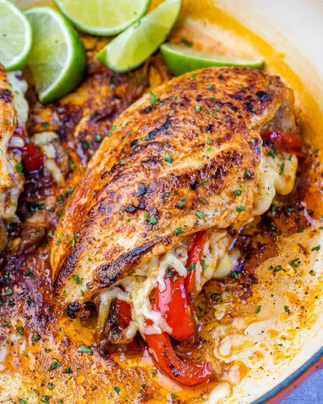

Home
Stuffed Chicken

Description:
Take your healthy chicken dinners to the next level by making this Fajita-style stuffed chicken breast recipe. Tender,
juicy, easy to make, and full of flavor. A perfect chicken recipe that the entire family will enjoy.
Ingredients:
- Olive Oil
- Onion
- Garlic Cloves
- Bell Peppers
- Chicken Breast
- Cheddar Cheese
- Lime
- Fresh Parsley
- Corn Starch
- Seasonings:
- Salt, Chili Powder, Smoked Paprika, Onion Powder, Garlic Powder, Cayenne Pepper, Ground Cumin
Steps:
- Make the fajita seasoning: To a small bowl, mix all the fajita seasoning ingredients.
- Next, make the fajita veggie mixture: Heat the oil in a large skillet over medium-high heat. Add the garlic
together with the onion and saute for 2-3 minutes. Add the peppers, then sprinkle with ½ of the fajita mix and
cook for 3 minutes more. Set aside.
- Prepare and stuff the chicken: Cut a lengthways pocket to each chicken breast. Rub the chicken with the remaining
fajita seasoning all over, then stuff the pocket with a spoonful of fajita-pepper mixture and cheddar cheese. Seal
with a toothpick by inserting it diagonally, to keep the stuffing in.
- Cook the stuffed chicken: To the same skillet, add the remaining oil and sear the chicken breast for 4-5 minutes
per side. Next, add ¼ cup of water to the pan, cover, and cook over low heat for 6-8 minutes, or until the chicken
is fully cooked through.
- Serve: Garnish with fresh parsley and serve with lime wedges if desired.